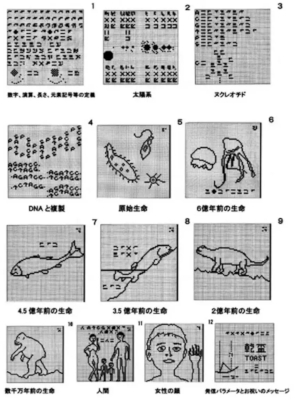

On august 15th, 1983 stanford university send out radio signals depicting life on earth in the form of 13 drawings. These drawings depict things slike our social constructs and the theory of evolution, drawings we hope a recipient may understand and even reply to. The further into space that we attempt to observe, the less we can see. Additionally, far into space we have observed potentially hospitable planets in distant solar systems, and for a radio signal to reach there and to recieve a reply would've taken about 40 years. Therefore. now 40 years later in 2023 we are anxiously awaiting a potential response that could possibly come any day now.
Coincidentally, the "star festival" in japan is celebrated on August 22nd, inspiring the Japan Aerospace Exploration Agency (JAXA) in central Japan to engage in actively seeking the potential cosmic reponse. Team lead Shinya Narusawa and his crew will actively seek space for the radio transmissions we are so eager for.
James Webb telescope find carbon on Europa, a jupiter moon, building a stronger case that life could exist on Europa. Although seemingly not very hospitable to us, carbon indicates that there is a potential for life that can inhabit the body is possible. Scientists speculate that if true, it is likely that such life would exist beneath the ice of the moon.